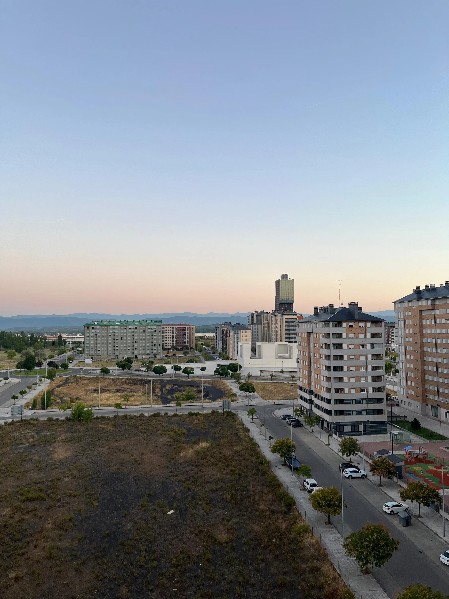

Nuestros proyectos
Trabajos Realizados
A lo largo del tiempo, hemos ejecutado numerosos proyectos en distintos puntos del Bierzo y más allá. Aquí puedes ver una selección de nuestras obras más recientes.

Seriedad, sencillez y profesionalidad en cada obra
Paycar BierzoNuestros proyectos
A lo largo del tiempo, hemos ejecutado numerosos proyectos en distintos puntos del Bierzo y más allá. Aquí puedes ver una selección de nuestras obras más recientes.